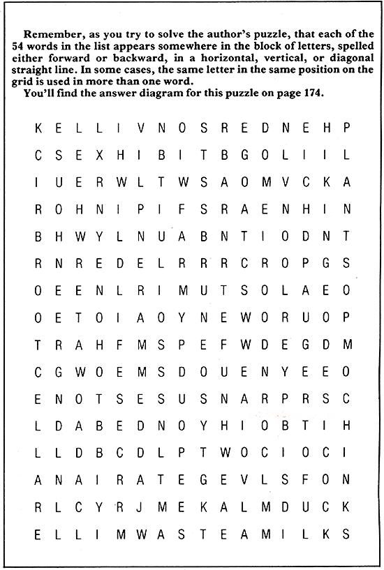
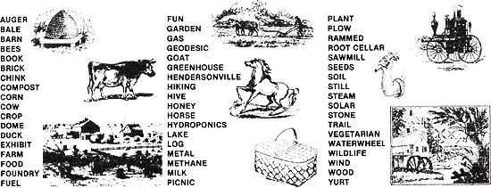

You may puzzle your way into a nice little sideline moneymaker if you learn to . . .
You don't have to be a professional writer to make good money with words . . . and if you doubt me, spend a few minutes at your local newsstand looking through any of the numerous word-search puzzle magazines now being published. Virtually all of the games in those specialized periodicals-as well as the similar puzzles featured regularly in mainstream consumer and trade magazines-are produced by people who have simply exercised a little imagination and tossed in a bit of humor to turn their spare time into cash.
You can puzzle for profit, too! Just how much money you make for any given word search quiz, of course, will depend on the payment policy of the publication in question . . . and on the size of the brainteaser itself. An 11 X 11 square (that is, a letter grid containing 11 rows of 11 letters each) may pay as little as $6.00. On the other hand, selling a 21 X 23 "biggie" to a widely circulated national magazine could bring $100 or more. In my experience, though, $15 is an average payment for a medium sized square.
Those seemingly small amounts can really add up, however, when you consider that-with practice-you can construct a salable word-search puzzle in a little over an hour. I spend about 15 hours a week on this sideline myself and net more than $600 a month!
HOW TO GET STARTED
To develop a feel for this unique craft and for what editors buy-study a variety of word search magazines. Scrutinize each puzzle carefully (paying particular attention to the relationship between the title and the word list, and to the way words are fit into the grid), and try to imagine the process the author went through to produce that particular game.
Usually, your first step is to come up with a basic subject for the puzzle. You can build a theme around almost any topic: famous people or places, hobbies, activities, holidays, events, nature, careers . . . you name it. Then think of a title-and a list of words-relating to that subject. Some puzzles are fairly straightforward in this regard: One of my creations, for instance, was called "Eggs citing" and included words describing how eggs can be cooked (baked, coddled, scrambled, etc.). Others, however, take a somewhat less direct approach . . . as in the puzzle that I captioned "What's Up?", which listed such diverse words as balloon, cloud, elevator, heads, inflation, soprano, and Venus.
In any case, keep in mind that unusual titles, or those that employ a play on words, are generally preferred by submissions editors .. . and can spell the difference between a sale and a rejection. And to get more mileage out of your ideas, always try to come up with more than one title for any given puzzle. Then you can simply change the initial word list somewhat, tack on a different heading, and-presto-you'll have another moneymaking idea to turn into a puzzle. For example, I recently sold two different pieces based on similar lists of archaeological terms . . . one was titled "Can You Dig It?", and the other "Sticks and Stones and Ancient Bones".
Actually, conceiving puzzles can be a lot of fun . . . and you don't even have to schedule extra time to do it. Those otherwise idle minutes you tick off while riding on the bus or waiting in lines and offices make perfect "working hours". My family makes a game of brainstorming titles and word lists while we do our daily chores. Children especially love this form of play as a rainy-day or travel activity.
Just be sure, though, that you jot your ideas down! I always carry a pocket-sized memo notebook with me for this purpose. Remember, too, that if you intend to earn a consistent income as a puzzle writer, you'll have to generate a fairly steady flow of submissions. I've found that typing the new ideas from my notebook onto 5 X 8 index cards once a week-and then filing the thought starters for future reference-really helps. I put the title and sample word list on the front of the card, reserving the back to use for recording submittals by date mailed, date returned, and payment received (if any). That way, I have a ready supply of fresh puzzle ideas to develop while I'm waiting for a decision on earlier works . . . and a simple record keeping system!
CONSTRUCTION
All you need to "build" a puzzle is a good title, a list of appropriate words, and . . . well, a certain amount of diligence.
If you've studied the answer diagrams in published brainteasers, you've undoubtedly noticed that words [1] must contain a minimum of three letters, [2] may be spelled forward or backward, and [3] can be placed horizontally, vertically, or diagonally. You may also have noticed that at least 75°7o of the letters in any given solution are found in circled words (editors frown on too much "empty" space).
Keeping those factors in mind, start laying out your puzzle on quarter-inch graph paper. The exact size of your creation, obviously, will be determined by the number of words you include. For our purposes, though, let's say that there are between 30 and 40 words on your list . . . in which case a 15 X 15 square should be about right. Using a ruler, draw that box on the paper.
Now, start fitting words into the space: Pencil a word in (using a good dictionary to check each word even if it "looks right" to you) . . . scan your list for another that might intersect with one you've already placed (or that will tuck neatly into an open space) . . . write it in . . . and go on until the grid is nearly full and you've exhausted your list. Then fill in the empty spaces with random letters.
I've found that it's usually best to insert the longer words around the perimeter of the square first. Then I fill in the remainder of the puzzle a section at a time with the shorter ones. As you work, try to vary the direction of the words . . . and don't hesitate to add new words to your list if you need them to fill gaps. Whatever you do, be sure to check each one off your list as you use it, and lightly circle the word on the diagram. Otherwise, you may lose track of which words you've used, and of where you've placed them!
Chances are, you'll find constructing word search puzzles a real challenge at first. But eventually-with practice and patience -you'll develop your own word-fitting tricks and techniques . . . and before you know it, you'll be diagramming like a pro!
BREAKING IN
The best source for publications that purchase word-search puzzles is Writer's Market, a book published annually that lists buyers' addresses, editorial requirements, and payment rates (you'll find good prospects not only in the "Puzzles" section, but also among some of the more extensive consumer- and trade-magazine listings). You can buy the 1984 edition for $18.95 at most bookstores, or-for an additional $1.50 to cover postage and handling-direct from Writer's Digest, Inc., Dept. TMEN, 9933 Alliance Road, Cincinnati, Ohio 45242. Most libraries have the book, too.
It's always a good idea to query a magazine regarding its current needs and general policies before you actually submit work for consideration. The periodical you have in mind may already be overstocked with puzzles on a certain theme, for example, or may be scouting around for word searches geared toward a particular holiday or event. And you may save yourself an unpleasant surprise by finding out beforehand whether the magazine pays on acceptance or only on publication (which can mean that there'll be a delay of several months before you get a check).
Be sure to request a copy of the buyer's puzzle guidelines, as well. Some editors want to see a title and sample word list before they'll give a go-ahead to construct the puzzle itself. Others insist on seeing finished puzzles, but only those that meet specific size criteria. Guidelines can help you tailor your submission to the editor's exact requirements, and can also alert you to a magazine's particular taboos (virtually all puzzle publications ban brand names, profanity, sexual terms, and ethnic labels).
Of course, editors will always reject sloppily prepared or incorrect submissions. Perfect execution is a must in this business, since it takes only one wrong letter to completely ruin a puzzle. Here's how to put together a professional-quality submission:
[1] Type the word list and the puzzle and answer diagrams on separate sheets of 8-1/2 X 11 white bond (don't use onionskin or
erasable paper) ... and mack topics for your files. Recheck the spelling of the words on your list and in your diagrams.
[2] Type your name, address, and Social Security number in the upper left corner of each sheet. Come down three spaces . . . type the puzzle's title . . . and then-three spaces below that-begin typing the list, letter grid, or answer diagram.
[3] Alphabetize and double-space the word list. Divide the roster evenly into no more than three columns.
[4] Double-space the letters, both horizontally and vertically, on your diagrams. Use capital letters only. When preparing the answer diagram, circle each word neatly, using black india ink.
[5] Include a self-addressed, stamped envelope with your submission. Mail the material flat in a legal-sized envelope, and send it first class-not at a manuscript rate-to avoid unnecessary delays. (You'll find that sending a publication five or more submissions at a time-I've included as many as 15 -will save you money. In any event, be sure that both your package and the return envelope carry sufficient postage.)
Most magazines respond to submissions within three weeks. (Meanwhile, you can be working on your next batch of puzzles!) If you don't hear from the editor within a month, send a polite follow-up note. And don't let rejection slips get you down . . . they're an inevitable part of a free-lancer's life. Puzzle editors tend to be friendly folks and-because competition in this market is relatively low-they'll often give helpful advice to beginners. Just keep trying . . . and, sooner or later, you're sure to make your first sale!
A CHALLENGE
In case you need a little extra inspiration to get you started in this business, I've worked up a word-search puzzle for you to solve. It's based on my observations a few rears back when I visited MOTHER's EcoVillage . . . and you shouldn't find the solution terribly difficult. What I'm hoping is that it'll get you to thinking, "Gee, I could put together a puzzle like this." Because the fact is, you can-anybody can-and get paid for doing it!
|
 |
 |
|